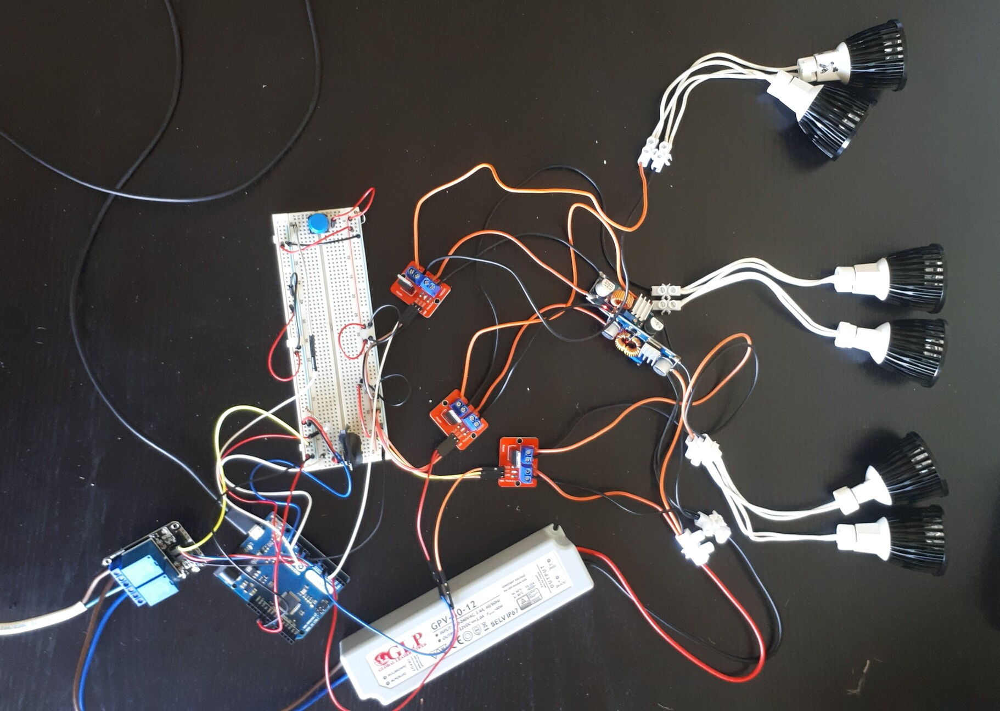
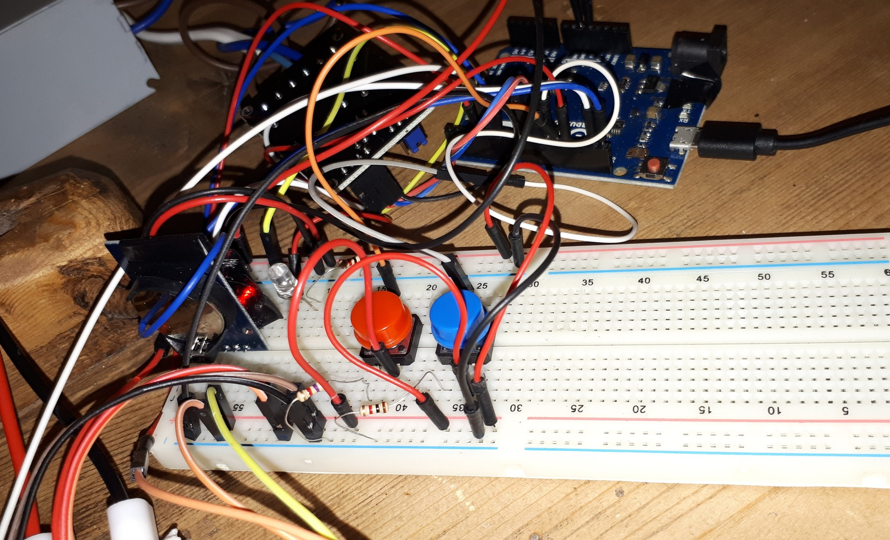

Now that the clock, relay and MOSFET are working, I'm ready to invest my time to make it actually useful. The first order of business is to hook up all of the LEDs, the proper PSU and MOSFETs.
I had to add two DC-DC converters to lower the voltage for two of the three LED sets because earlier I found that the LEDs don't dim very well at 12V, but do at 8V. I added only two instead of three because I'm planning to use the third set as either fully off or fully on as the last step of the ramp up.
To make it actually function like an alarm clock I decided on having 3 settings:
I tested this setup for a while and it worked, but had some issues:
Do all prototypes end up looking this glorious?
So far, the box seems to be a great & easy solution. At first I had envisioned something more sun-esque, and I'd still like to do something like that, but I'm starting to think that maybe a box like this could still exist inside of another circular chassis. For now I'm undecided on how to achieve a more sun-esque look - at first I thought I should just plop a scatter lens in front of the LEDs and call it a day (haha), but unfortunately those are impossible to find cheaply.. Maybe I just don't know how to look for them.
I also added another button at this point (the red one) - a button which turns the lights on/off whenever you need. After that, the project stayed in pretty much this exact state for quite some time (and it worked great!) before I decied that I want to add an LCD and more buttons for changing the settings.
Next part: Adding the LCD Previous part: Testing